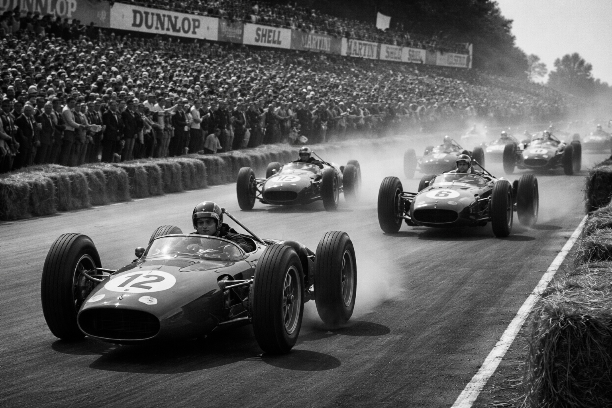

Cos'è la Formula 1?
La Formula 1, spesso abbreviata in F1, è la massima categoria mondiale dell’automobilismo su pista.
Considerata il vertice del motorsport, rappresenta un mix
unico di tecnologia avanzata, prestazioni estreme, strategia e talento umano. Ogni anno milioni di
appassionati seguono questo campionato, che mette in competizione i migliori piloti e le squadre più
prestigiose del pianeta.
Ti trovi nel miglior sito web per appassionati di Formula 1!
Nel nostro sito potrai visualizzare tutte le informazioni che ti servono per rimanere aggiornato sul mondo della Formula 1.
Nella sezione Piloti potrai visualizzare tutti i piloti attualmente in pista e visualizzarne le informazioni con i loro risultati di carriera.
Nella sezione Scuderie potrai vedere le diverse squadre di cui i Piloti fanno parte.
Per vedere l'attuale classifica ti basterà andare nella sezione Classifica dove potrai visualizzare le posizioni attuali dei vari piloti o delle varie scuderie!

Vuoi sentire cosa hanno da dire altri appassionati di Formula 1 come te?
Nella nostra sezione Gare potrai vedere tutte le gare del campionato di Formula 1 e visualizzare i risultati di ogni singola gara con i piloti che hanno ottenuto il podio! Inoltre potrai cliccare una gara per vedere cosa altri utenti pensano nei vari commenti.
Nella nostra sezione Circuiti invece, potrai vedere la lista di tutti i circuiti dove vengono effettuate le gare, con diverse informazioni come il numero di curve, e la lunghezza del circuito!
Vuoi fare un commento anche tu?
Se vuoi commentare nel nostro sito ti basterà fare l'accesso, oppure registrarti tramite la sezione Area Riservata, una volta effettuato l'accesso anche tu potrai commentare nella nostra sezione gare e mostrare agli altri fan cosa ne pensi!
La Formula 1 non è solo un campionato automobilistico: è un mix di innovazione,
adrenalina, storia e spirito competitivo. Un mondo in continua evoluzione che continua, dopo più di
settant’anni, a emozionare appassionati di ogni età.
Chi siamo noi?
Grazie per essere entrato nel nostro sito Formula 1 Fanclub!
Siamo un gruppo di appassionati di Formula 1 con un'idea: creare uno spazio dedicato al mondo delle gare automobilistiche
in cui ci sono tutte le informazioni che un vero fan della Formula 1 deve sapere!
In questo sito potrai scoprire chi sono i piloti in gara, le scuderie che partecipano al campionato, la classifica attuale ,
le gare del gran premio e i circuiti su cui corrono i piloti.
"Nella Formula 1 può succedere di tutto, e di solito succede"
-Max Verstappen
Vuoi entrare a far parte di questo mondo e condividere la tua passione per la Formula 1 con la nostra community? Iscriviti al nostro sito, ti aspettiamo!